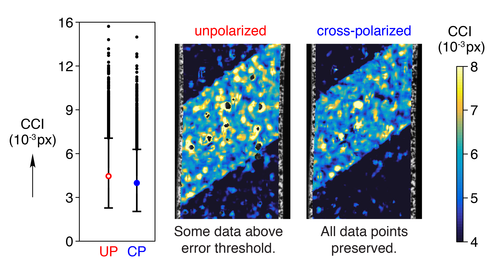

Will LePage
Mechanical Engineering
My thesis investigates the fatigue and fracture of shape memory alloys with techniques that redefine the limits of experimental mechanics. After completing my PhD, I aspire to be a professor who cultivates a dedication to helping people and the planet though engineering.
For more about me and my research, explore this website, , or visit my profiles on Google Scholar and ResearchGate:
Curriculum vitae
Education

University of Michigan

University of Tulsa
Research
Technologies to combat climate change require advancements in materials for lightweight structures and energy storage systems. My research focuses on understanding and enhancing the durability limits of energy materials, with an emphasis on shape memory alloys (SMAs). This unique class of metals is most commonly used in biomedical devices such as stents, but can also be leveraged to make weight-saving actuators with exceptionally low mass and high specific power. Currently, SMA actuators are limited in their cyclic capacity and confound durability predictions because of their complex phase transformations. New insights on the fundamental damage mechanisms in SMAs will enable more cyclic durability and better failure predictions.
En route to building new understandings about material degradation and failure, I am developing new experimental frameworks to characterize material responses with unprecedented breadth and precision between the millimeter and nanometer length scales. In addition, I investigate the connections between electrochemical performance and mechanical properties of materials for next-generation batteries with lithium and sodium metal anodes.
Peer-reviewed journal publications
- LePage W, Shaw J, Daly S. Optimized paint sequence for speckle patterns in digital image correlation. Experimental Techniques, submitted, 2017.
- Chen K, Wood K, Kazyak E, LePage W, Davis A, Sanchez A, Dasgupta N. Dead lithium: mass transport effects on voltage, capacity, and failure of lithium metal anodes. Journal of Materials Chemistry A, 2017. doi:10.1039/c7ta00371d.
- during continued cycling, dead Li accumulates and impedes ionic mass transport, requiring a greater concentration gradient for diffusion
- this accumulated dead Li is responsible for capacity fade in Li metal full cells, before dendrite shorting or electrolyte depletion occur
- voltage measurements during galvanostatic cycling indicate mass transport effects by changing from “peaking” to “arcing”
- my major contributions to this work: quantitative measurement of dead Li layer thickness with SEM images; coin cell fabrication and testing

- LePage W, Daly S, Shaw J. Cross polarization for improved digital image correlation. Experimental Mechanics, 2016. doi:10.1007/s11340-016-0129-2.
- expedient method for optimizing a popular and powerful experimental mechanics technique, optical digital image correlation (DIC)
- eliminates saturated pixels to preserve sub-pixel displacement resolution
- improves correlation confidence interval by about 10%
- reduces 2-D DIC error by up to 60% 
- Athuada T, LePage W, Chalker J, Ozer R. High density growth of ZnO nanorods on cotton fabric enables access to a flame resistant composite. RSC Advances, 2014. doi:10.1039/C4RA01543F.
Awards
- Fellow, National Defense Science & Engineering Graduate (NDSEG) Program, 2014
- Honorable mention, NSF Graduate Research Fellowship Program, 2014
- Fellow, Tau Beta Pi Anderson Fellowship
- All-conference athlete, NCAA Div. 1 Conference USA Outdoor Track & Field, 3000m steeplechase, 2013
- Goldwater Scholar, 2012
- Udall Scholar, 2011 and 2012
- National Merit Scholar & University of Tulsa Presidential Scholar (full scholarship), 2009